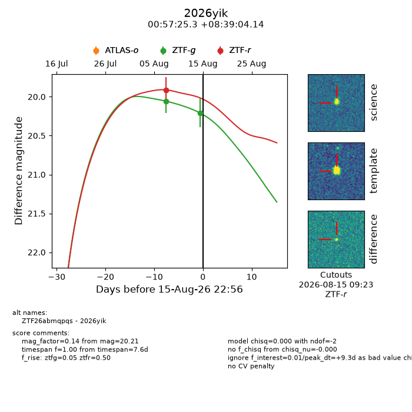
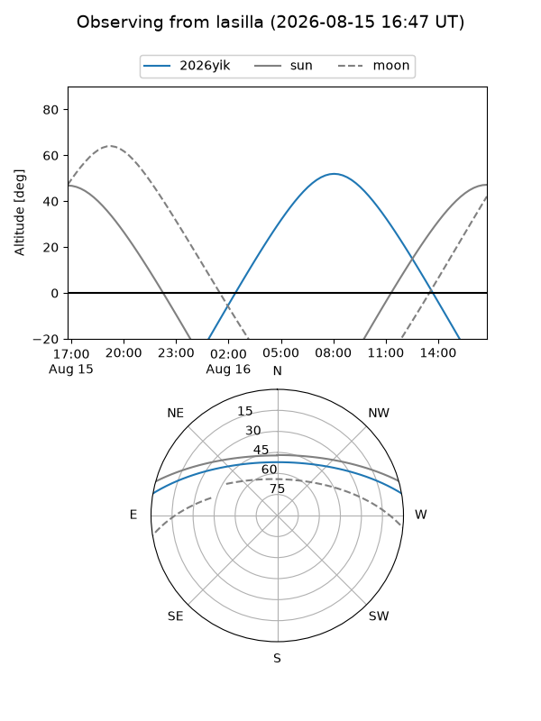
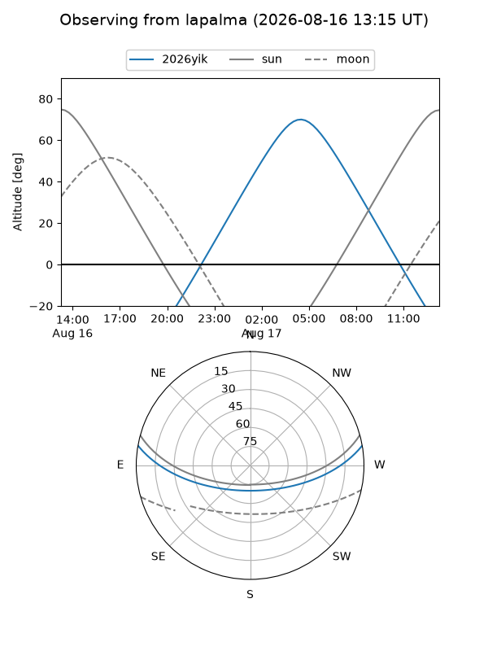
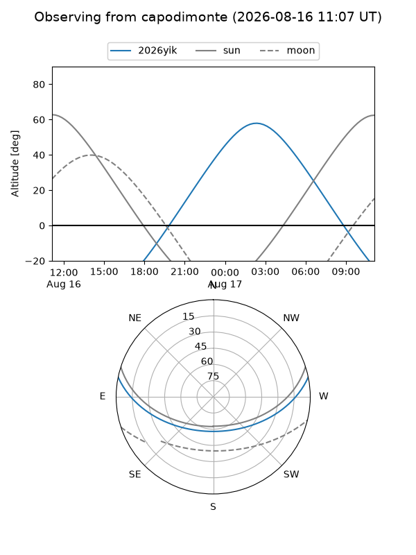
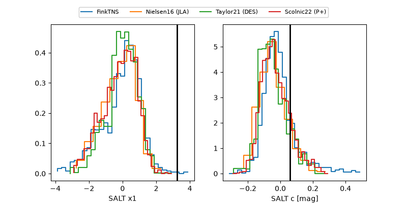

2026yik
Target 2026yik at 2026-08-16 10:57
Aliases and brokers:
FINK-ZTF: ztf.fink-portal.org/ZTF26abmqpqs
Lasair-ZTF: lasair-ztf.lsst.ac.uk/objects/ZTF26abmqpqs
ALeRCE-ZTF: alerce.online/object/ZTF26abmqpqs
YSE-PZ: ziggy.ucolick.org/yse/transient_detail/2026yik
TNS name: wis-tns.org/object/2026yik
Direct TNS query: direct search
alt names
ZTF26abmqpqs (ztf,fink_ztf)
2026yik (tns,yse)
Coordinates:
equatorial (ra, dec) = 14.3552,+8.65115
equatorial (HMS+DMS) = 00:57:25.25,+08:39:04.14
galactic (l, b) = (125.4598,-54.19123)
Flags:
TNS type: nan
peak dt: +9.8
Photometry:
last ztfg=20.21, ztfr=19.91
2 ztfg, 1 ztfr detections
Lightcurve

Visibility



Additional plots
